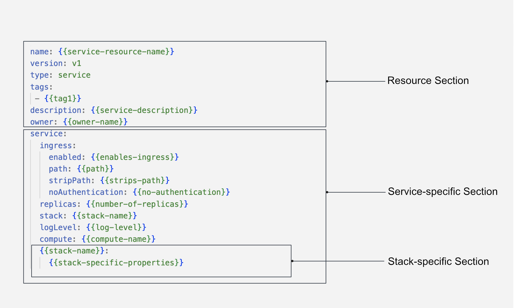

Service¶
A Service represents a long-running process that acts as a receiver and/or provider of APIs. It's a DataOS Resource, catering to various scenarios involving continuous real-time and streaming data flow. Whether it's event processing, streaming IoT data, log processing for network devices, real-time stock trade analysis, or dynamic user interfaces (UIs), the Service Resource enables data developers to gather, process, and analyze real-time/streaming data flow, enabling timely insights and swift response to the latest information.
While resembling a Workflow in some aspects, a Service differentiates itself by not employing Directed Acyclic Graphs (DAGs). Instead, a Service is provisioned as a runnable entity, albeit limited to utilizing a single Stack at a time. This contrasts with a Workflow, which can accommodate multiple jobs being executed upon separate Stacks.
Core Concepts¶
Ports and Sockets¶
The Service Resource is equipped with a port and a socket, for data reception and transmission. By listening on a specific URL port, the Service facilitates the posting or retrieval of data. The presence or absence of these ports and sockets depends on the specific use case requirements and objectives.
Ingress¶
In DataOS, Ingress exposes HTTP and HTTPS routes from outside the DataOS context to services within the DataOS environment. It configures the incoming port for the Service Resource, enabling access to DataOS resources from external links. Ingress plays a crucial role in facilitating communication between DataOS and external systems or users.
Replicas¶
To achieve robust scalability, the Service Resource introduces the concept of replicas. Replicas ensure a stable set of identical Kubernetes Pods that run the Service concurrently. This mechanism guarantees availability by maintaining a specified number of Pods, enabling the Service to effortlessly handle heavy workloads without succumbing to failure.
Structure of a Service YAML¶
The Service Resource is configured using a YAML file, consisting of several rooted sections. The structure for a Service YAML is given below:

Service Resource YAML configuration structure
How to create a Service?¶
To understand how a Service works, let’s take a case scenario where a user wants to bring the data from a web app using Google Tag Manager to draw up insights in real-time. This would involve sending all the captured data by Google Tag Manager to an API, applying some transformations, and writing it to, let’s say, a streaming source, Kafka. This would require a Service that would keep listening to the Google Tag Manager API and sync all the data to Kafka in real time.
Create a Service YAML manifest¶
To create a Service Resource, you need to configure the YAML file with the appropriate attributes. The following sections explain the necessary configurations.
Configure the Resource Meta Section¶
A Service is a Resource-type in DataOS. Below is the YAML configuration for the Resource Meta Section:
name: {{my-workflow}}
version: v1
type: service
tags:
- {{dataos:type:resource}}
- {{dataos:type:workspace-resource}}
description: {{This is a sample service YAML configuration}}
owner: {{iamgroot}}
For detailed customization options and additional attributes of the Resource Section, refer to the link: Attributes of Resource Meta Section.
Configuring the Service-specific Section¶
The Service-specific Section contains configurations specific to the Service resource. The YAML syntax is provided below:
service:
title: {{"Hit Collector Service"}}
replicas: {{1}}
autoScaling:
enabled: {{true}}
minReplicas: {{2}}
maxReplicas: {{4}}
targetMemoryUtilizationPercentage: {{80}}
targetCPUUtilizationPercentage: {{80}}
ingress:
enabled: {{true}}
stripPath: {{false}}
path: {{/hit-collector}}
noAuthentication: {{true}}
stack: {{stack}} # Specify stack here
logLevel: {{INFO}}
dryRun: {{true}}
servicePort: {{8099}}
{{Stack-specific-section}}
Configuring the Stack-specific Section¶
The Stack-specific Section allows you to specify the desired stack for executing your service. Depending on your requirements, you can choose from the following supported stacks:
-
Benthos Stack: The Benthos stack provides advanced capabilities for stream data processing and analysis.
-
Alpha Stack: The Alpha stack offers a powerful environment for hosting web-appliation, and custom Docker images atop DataOS.
-
Beacon Stack: The Beacon stack provides a comprehensive set of tools and utilities for managing PostsgreSQL Database.
To configure the Stack-specific Section, refer to the appropriate stack documentation for detailed instructions on setting up and customizing the stack according to your needs. Each stack has its unique features and configurations that can enhance the functionality of your workflow. A sample is provided below.
Click here to view a sample service
The sample service ingests product data from the thirdparty01 depot and store it in the icebase depot. This workflow leverages the Flare stack to efficiently execute the necessary data ingestion tasks. The provided YAML code snippet outlines the configuration and specifications of this workflow.Code Snippet
name: my-workflow
version: v1
type: service
tags:
- dataos:type:resource
- dataos:type:workspace-resource
description: This is a sample service YAML configuration
owner: iamgroot
service:
title: "Hit Collector Service"
replicas: 1
autoScaling:
enabled: true
minReplicas: 2
maxReplicas: 4
targetMemoryUtilizationPercentage: 80
targetCPUUtilizationPercentage: 80
ingress:
enabled: true
stripPath: false
path: /hit-collector
noAuthentication: true
stack: benthos
logLevel: INFO
compute: runnable-default
dryRun: true
servicePort: 8099
benthos:
# Input (From Google Tag Manager API)
input:
http_server:
address: 0.0.0.0:8099
path: /hit-collector
allowed_verbs:
- POST
timeout: 5s
processors:
- log:
level: INFO
message: hit collector - received hit...
# Pipeline (Processing)
pipeline:
processors:
- log:
level: DEBUG
message: processing message...
- log:
level: DEBUG
message: ${! meta() }
- bloblang: meta status_code = 200
- for_each:
- conditional:
condition:
type: processor_failed
processors:
- log:
level: ERROR
message: 'Schema validation failed due to: ${!error()}'
- bloblang: meta status_code = 400
- log:
level: DEBUG
message: ${! meta() }
- bloblang: |
root.payload = this.string().encode("base64").string()
root.received_at = timestamp("2006-01-02T15:04:05.000Z")
root.metadata = meta()
root.id = uuid_v4()
- log:
level: DEBUG
message: processing message...complete
threads: 1
# Output (Into Kafka Depot)
output:
broker:
outputs:
- broker:
outputs:
- type: dataos_depot
plugin:
address: dataos://kafkapulsar:default/gtm_hits_dead_letter01
metadata:
type: STREAM
description: The GTM Hit Error Data Stream
format: json
schema: '{"type":"record","name":"default","namespace":"default","fields":[]}'
tags:
- hit
- gtm
- stream
- error-stream
- dead-letter
title: GTM Hit Error Stream
- type: sync_response
pattern: fan_out
processors:
- bloblang: root = if !errored() { deleted() }
- broker:
outputs:
- type: dataos_depot
plugin:
address: dataos://kafkapulsar:default/gtm_hits01
metadata:
type: STREAM
description: The GTM Hit Data Stream
format: json
schema: '{"type":"record","name":"default","namespace":"default","fields":[]}'
tags:
- hit
- gtm
- event
- stream
title: GTM Hit Stream
- type: sync_response
pattern: fan_out
processors:
- bloblang: root = if errored() { deleted() }
pattern: fan_out
Apply a Service YAML¶
Run the apply command on DataOS CLI to create the service resource in DataOS environment.
dataos-ctl apply -f {{filename.yaml}} -w {{name of the workspace}}
To learn more about apply command, refer to the CLI section.
Service YAML Configuration Field Reference¶
The table below presents an exhaustive list of key-value properties and their descriptions within a Service YAML file:
| Attribute | Data Type | Default Value | Possible Value | Requirement |
|---|---|---|---|---|
service |
mapping | none | none | mandatory |
title |
string | none | any string | optional |
tags |
list of strings | none | valid string | optional |
servicePort |
integer | none | any valid service port | optional |
ingress |
mapping | none | none | mandatory |
enabled |
boolean | false | true/false | mandatory |
path |
string | none | any valid path | mandatory |
stripPath |
boolean | false | true/false | mandatory |
noAuthentication |
boolean | false | true/false | optional |
replicas |
integer | 1 | any positive integer | optional |
autoscaling |
mapping | none | none | optional |
enabled |
boolean | false | true/false | optional |
minReplicas |
integer | 1 | any positive integer | optional |
maxReplicas |
integer | 1 | any positive integer | optional |
targetMemoryUtilizationPercentage |
integer | none | any positive integer | optional |
targetCPUUtilizationPercentage |
integer | None | any positive integer | optional |
stack |
string | None | benthos/alpha/beacon | mandatory |
logLevel |
string | INFO | INFO/WARN/DEBUG/ERROR | optional |
configs |
mapping | none | key-value pairs of configurations | optional |
envs |
mapping | none | key-value pairs of environment variables | optional |
compute |
string | none | runnable-default or any other custom Compute Resource | mandatory |
resources |
mapping | none | none | optional |
runAsApiKey |
string | user's API Key | any valid DataOS API Key | Optional |
runAsUser |
string | user's User-id | userID of Use-Case Assignee | optional |
dryRun |
boolean | false | true/false | optional |
For a detailed explanation of each attribute, consult the Attributes of Service YAML.